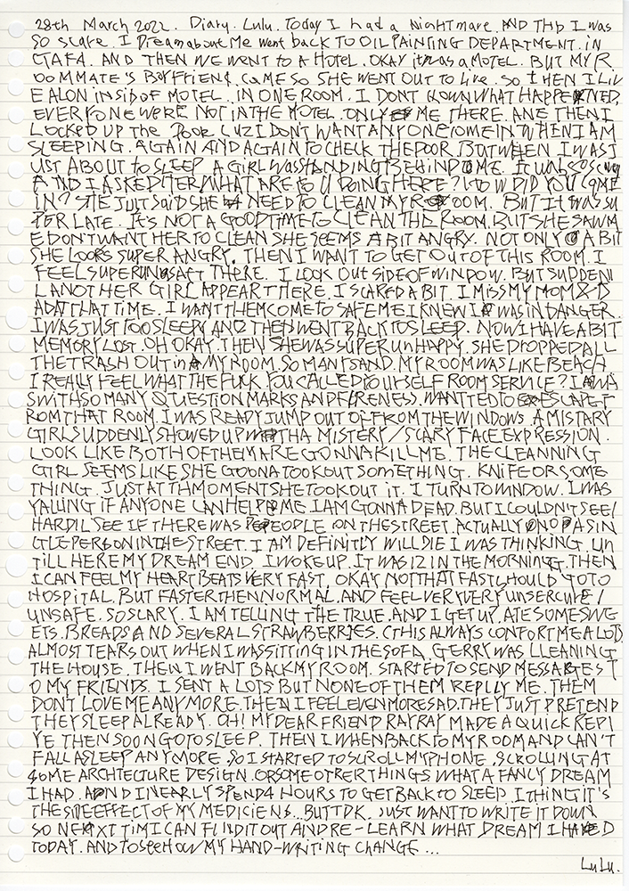

Nightmare / 噩梦 | Music Track
#Experimental #Electronic
Apr. 2022
————
Description
I have dreams basically every night. The inspiration for this project came from a nightmare I had at one night and it’s about someone trying to kill me. I woke up around 4:00 in the morning and then I wrote the story down, also sketched these inspirations that came from that dream.
Humans dream with sounds, dialogue, noise, or background music. In fact, these sounds are also included in the category of our daily memories. I wish to restore/recreate this dream by simulating these sounds, not just in terms of images and words. The memory of dreams has always been very subjective, as well as personal, so we choose the parts we want, to record, to archive, and to tell this story to others, in fact, that doesn’t stop the story from being interesting. So although dreams are subjective, I still hope to record this story as objectively as possible with sound.
The most commonly heard view of dreams is that of Freud: “A dream is the fulfillment of a desire that is unrealised and repressed in reality”. Dreams are a subconscious activity, and because the psychological defense mechanisms of man suppress his own wishes, the repressed wishes are not expressed directly in the dream, but appear as symbols through distortions, so that dreams are symbolic. Then we question nightmares, bad dreams, under this interpretation, do they also are the fulfillment of wishes, the fulfillment of subconscious fearnesses. Therefore, nightmares also come from people’s stresses and dissatisfactions that they experience in their daily life, and then under repression the brain releases these things all over again at night. But in any case, dreams take place in deep sleep, and what perhaps that dreamer doesn’t even care about to the subconscious thoughts, because the dream may explain more clearly.
————
Text & Sketches

Whole event of the dream
Hand-write text | Apr. 2022

Tree and Cat
sketch on paper | Dec. 2021
Nightmare-1
Mix-materials on paper | Apr. 2022
Nightmare-2
Mix-materials on paper | Apr. 2022
Nightmare-3
Mix-materials on paper | Apr. 2022
————
Reference
1. Rycroft, Charles. A Critical Dictionary of Psychoanalysis. London: Penguin Books, 1995, p. 41.
2. Freud, Sigmund. The Interpretation of Dreams. Translated by A. A. Brill, Wordsworth Editions, 1997.
3. Group Ongaku - Automatism